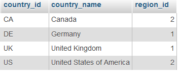
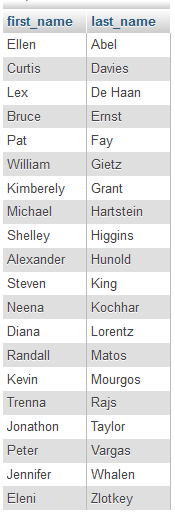
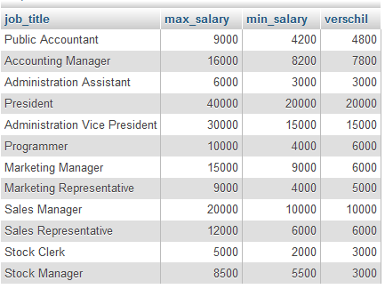
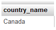
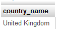
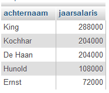
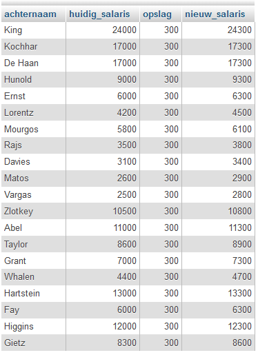
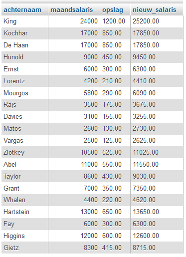
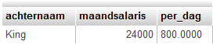
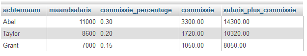

Opdrachten 1#
%LOAD ../data/employees.db
Opdracht 1
Query 1: Toon alles van de tabel countries, zonder de kolomnamen te noemen op de bovenste regel van het SELECT statement.

Opdracht 2
Query 2: Toon alle voornamen en achternamen van de tabel employees.

Opdracht 3
Query 3: Toon job_title, het maximum salary, het minimum salary en het verschil tussen die twee van de tabel jobs.

Opdracht 4
Query 4: Toon enkel de naam van het land van de bovenste rij van de tabel countries.

Opdracht 5
Query 5: Toon enkel het land United Kingdom van de tabel countries. Je laat maar één rij zien en je slaat twee rijen over vanaf het begin.

Opdracht 6
Query 6: In de tabel employees staan de maandsalarissen. Maak een overzicht met de jaarsalarissen en toon enkel de eerste vijf rijen. Let op de kolomnamen.

Opdracht 7
Query 7: Alle personeelsleden van de tabel employees krijgen 300 dollar opslag. Maak een query voor onderstaande tabel.

Opdracht 8
Query 8: Alle personeelsleden van de tabel employees krijgen 5% opslag. Maak een query voor onderstaande tabel. In de Amerikaanse notatie bij getallen schrijf je een punt waar wij een komma zetten.

Opdracht 9
Query 9: Hoeveel verdient King per dag als we uitgaan van 30 dagen in een maand? Toon van de tabel employees enkel de eerste rij hiervoor zonder een WHERE te gebruiken.

Opdracht 10
Query 10: Maak een overzicht zoals hieronder. Het zijn drie van de vier werknemers van de tabel employees die commissie krijgen over hun salaris. Je toont maar drie rijen. De bedragen zijn niet afgerond.
